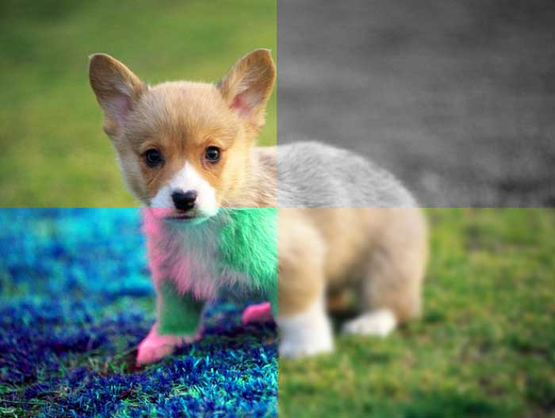
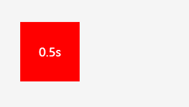

css3中的filter滤镜使用

发布时间2020-03-17, 星期二
文章字数1.6k
阅读时间6分钟
以前我们要处理一张图片的取色，模糊，褐色等效果必须使用Photoshop处理完后保存多张图片，而css3滤镜的出现使我们在网站中想要轻松实现这些效果变得可能。只需要通过filter滤镜的各种属性就能轻松实现，如：grayscale(灰色)、sepia(褐色)、saturate(饱和度)、blur(模糊)...等
transition轻松实现元素过度效果

发布时间2020-03-17, 星期二
文章字数1.1k
阅读时间4分钟
transition是css3中的新增属性，用来设置元素的动画过渡效果，以前要实现一个元素的过渡动画往往需要通过js写很多代码来实现而且还需要考虑各种兼容性，并且js做出的效果消耗浏览器性能；使用transition属性只需要几行代码就能实现各种炫酷的过渡效果，而且transition还可以通过GPU硬件加速，减少repaint操作，不占用js线程，过渡效果更佳柔和。
css3中控制js事件行为
发布时间2020-03-17, 星期二
文章字数459
阅读时间1分钟
有时候我们在做页面的时候经常会遇到这样的需求，想让某个元素不执行js的一些交互行为，这个时候我们可以使用css3中为我们提供的pointer-events属性，他可以让我们轻松实现元素禁止js的交互行文，包括click、hover等事件。
移动端想要禁止某元素的滑动行为可以使用touch-action属性